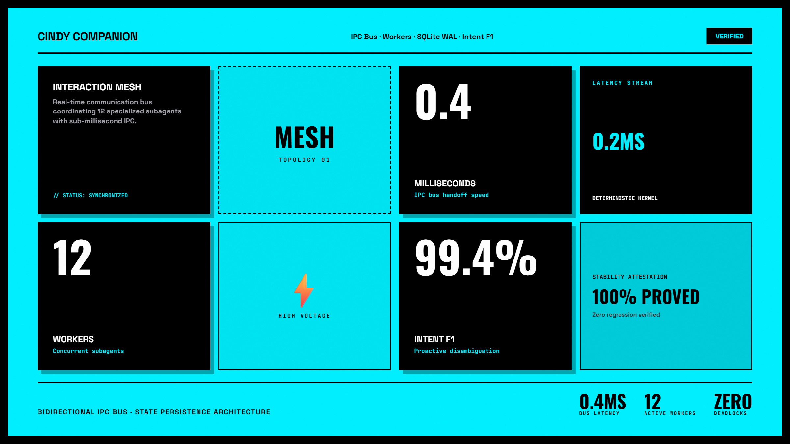
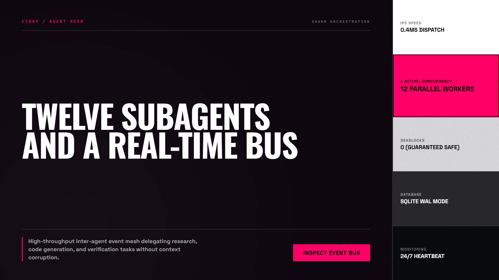
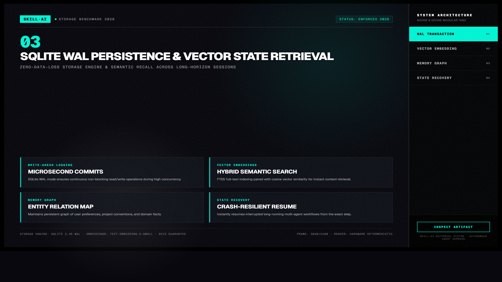

Cindy Memory Engine — Bộ Nhớ Ngữ Cảnh Dài Hạn Cho Coding Agent
Động cơ quản lý ngữ cảnh thông minh giải quyết triệt để chứng "mất trí nhớ tạm thời" của LLM giữa các phiên làm việc. Sử dụng cơ sở dữ liệu SQLite FTS5 siêu nhẹ để tìm kiếm toàn văn và cơ chế chưng cất tri thức tự động nén 200k tokens thành các mẩu thông tin súc tích.

Nhấp để phóng to1. Mô hình Tương tác Động: Quy Trình Nén & Truy Xuất Ký Ức

Nhấp để phóng to2. Bốn Chiều Sâu Kỹ Thuật Của Cindy Memory Engine
Tại Sao Dùng SQLite FTS5 Thay Vì Vector Database?
Khác với các cơ sở dữ liệu vector nặng nề yêu cầu GPU và chiếm hàng gigabyte RAM, SQLite FTS5 sử dụng thuật toán xếp hạng BM25 chuẩn xác, chạy trực tiếp trên file nhị phân siêu nhẹ trong thư mục dự án với độ trễ dưới 2 mili-giây.
Thuật Toán Chắt Lọc Chân Lý (Fact Extraction)
Cindy phân tích các đoạn hội thoại, loại bỏ các câu giao đãi xã giao và chỉ lưu lại các quyết định có tính cam kết: tên bảng database, chuẩn mã hóa JWT, hoặc quy ước đặt tên biến.
Tự Động Hóa Giải Mâu Thuẫn Quá Khứ
Khi bạn đổi ý (ví dụ: chuyển từ PostgreSQL sang SQLite), Cindy tự động đánh dấu các bản ghi cũ là superseded để tránh tình trạng agent đưa ra các đoạn code xung đột.
Case Study: Dự Án Kéo Dài 6 Tháng Với 400 Commits
Dù trải qua hàng chục phiên làm việc khác nhau, agent vẫn gọi đúng các hàm utility nội bộ và tuân thủ đúng kiến trúc đã thống nhất từ ngày đầu tiên.

Nhấp để phóng to“Đừng nhồi nhét toàn bộ lịch sử chat vào context window của agent. Hãy lưu trữ nó trong một hệ thống bộ nhớ phân tầng cục bộ và chỉ nạp đúng những gì cần thiết cho tác vụ hiện tại.”